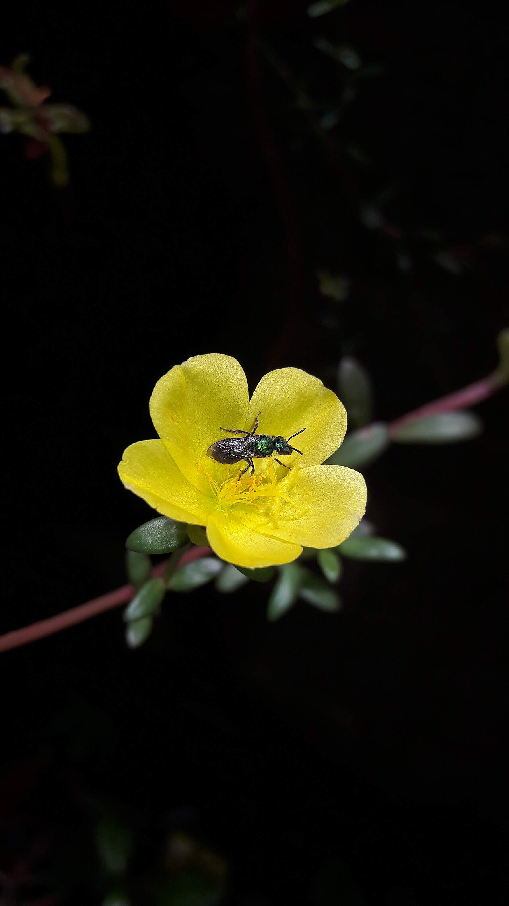

Por que as abelhas aumentam a produção agrícola

As abelhas desempenham um papel essencial na natureza, que vai muito além da produção de mel. Sua principal função é a polinização, processo responsável pela reprodução das plantas.
A polinização acontece quando o pólen é transferido de uma flor para outra, permitindo a formação de frutos e sementes. Sem esse processo, muitas plantas não conseguem produzir.
Estudos mostram que cerca de 90% das plantas com flores dependem de polinizadores, principalmente as abelhas.
Elas são extremamente eficientes nesse processo, pois visitam várias flores por dia e transportam pólen com facilidade entre elas.
Culturas agrícolas como maracujá, melancia, café, soja e diversas frutas apresentam aumento significativo de produção quando há presença de abelhas na área.
Além da quantidade, também há melhora na qualidade dos alimentos, com frutos maiores, mais uniformes e com melhor valor comercial.
Isso mostra que proteger as abelhas não é apenas uma questão ambiental, mas também uma estratégia econômica importante para o produtor rural.
Conforme o Estudos sobre Valor Econômico da Polinização da Embrapa (2022), a presença de abelhas pode aumentar a produtividade de culturas como café e frutas em até 30%, gerando ganhos financeiros significativos para os agricultores. (Fonte: EMBRAPA, 2022)